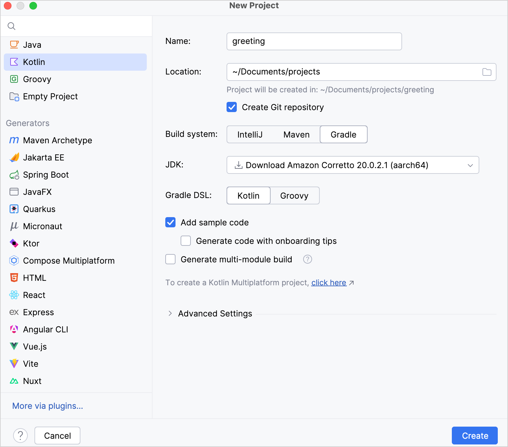
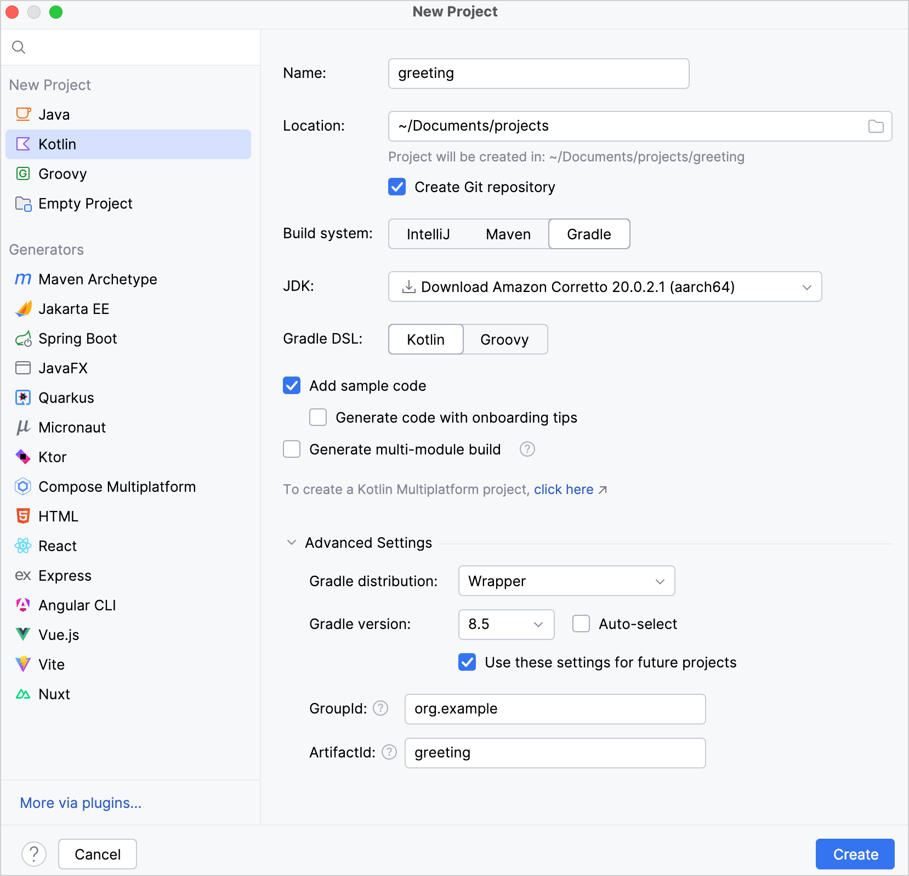
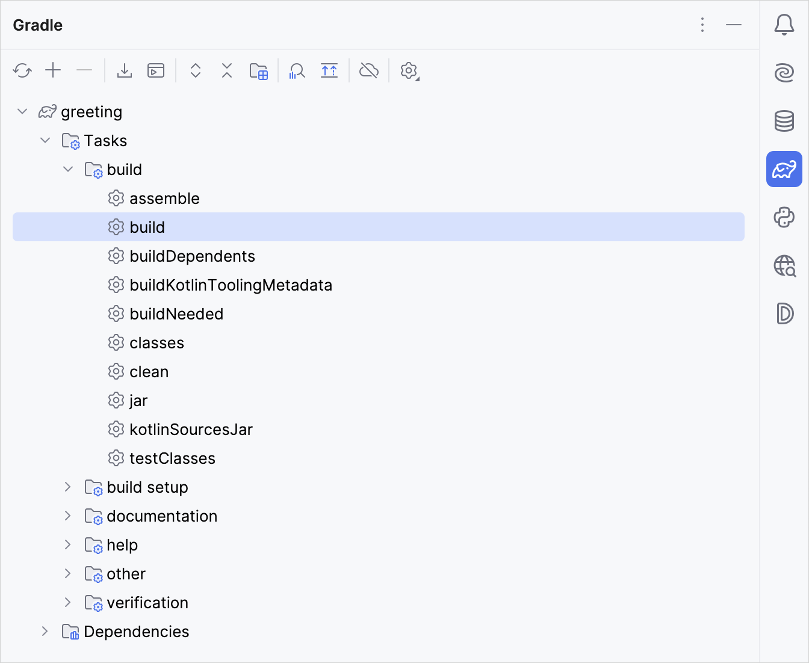
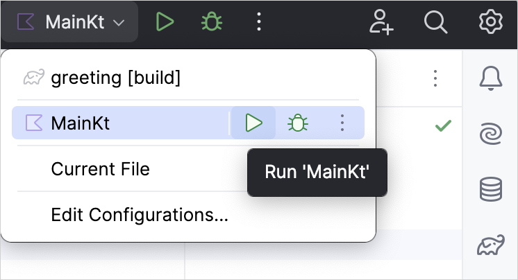

This tutorial demonstrates how to use IntelliJ IDEA and Gradle to create a JVM console application.
To get started, first download and install the latest version of
IntelliJ IDEA
.
Create a project
In IntelliJ IDEA, select
File
|
New
|
Project
.
In the panel on the left, select
Kotlin
.
Name the new project and change its location, if necessary.

Select the
Gradle
build system.
From the
JDK list
, select the
JDK
that you want to use in your project.
If the JDK is installed on your computer, but not defined in the IDE, select
Add JDK
and specify the path to the JDK home directory.
If you don't have the necessary JDK on your computer, select
Download JDK
.
Select the
Kotlin
DSL for Gradle.
Select the
Add sample code
checkbox to create a file with a sample
"Hello World!"
application.
Click
Create
.
You have successfully created a project with Gradle!
Specify a Gradle version for your project
You can explicitly specify a Gradle version for your project under the
Advanced Settings
section, either by using the Gradle Wrapper or a local installation of Gradle:
Gradle Wrapper:
From the
Gradle distribution
list, select
Wrapper
.
Disable the
Auto-select
checkbox.
From the
Gradle version
list, select your Gradle version.
Local installation:
From the
Gradle distribution
list, select
Local installation
.
For
Gradle location
, specify the path of your local Gradle version.

Explore the build script
Open the
build.gradle.kts
file. This is the Gradle Kotlin build script, which contains Kotlin-related artifacts and other parts required for the application:
plugins {
kotlin("jvm") version "2.1.20" // Kotlin version to use
}
group = "org.example" // A company name, for example, `org.jetbrains`
version = "1.0-SNAPSHOT" // Version to assign to the built artifact
repositories { // Sources of dependencies. See 1️⃣
mavenCentral() // Maven Central Repository. See 2️⃣
}
dependencies { // All the libraries you want to use. See 3️⃣
// Copy dependencies' names after you find them in a repository
testImplementation(kotlin("test")) // The Kotlin test library
}
tasks.test { // See 4️⃣
useJUnitPlatform() // JUnitPlatform for tests. See 5️⃣
}
Open the Gradle window by selecting
View
|
Tool Windows
|
Gradle
:

Execute the
build
Gradle task in
Tasks\build\
. In the
Build
window,
BUILD SUCCESSFUL
appears. It means that Gradle built the application successfully.
In
src/main/kotlin
, open the
Main.kt
file:
src
directory contains Kotlin source files and resources.
Main.kt
file contains sample code that will print
Hello World!
.
Run the application by clicking the green
Run
icon in the gutter and select
Run 'MainKt'
.

You can see the result in the
Run
tool window:
Congratulations! You have just run your first Kotlin application.